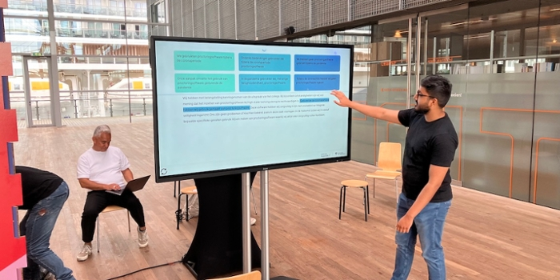
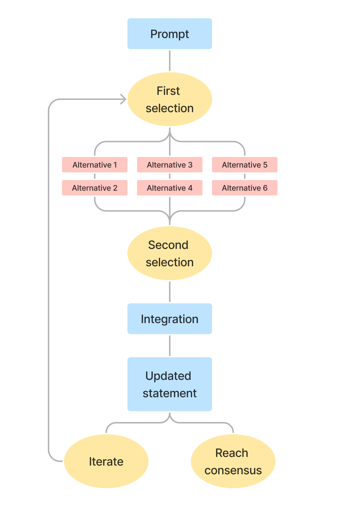

N.B.: The Consensus Machine was a group project to which five people contributed their specific skills, from back-end engineering to digital design. The article below, which I authored, is part of the materials that describe the project and is meant to provide its rationale and context. The software of the Consensus Machine is open source and available at https://github.com/responsibleIT/poldermodel.

The Consensus Machine is a project commissioned by the Hogeschool van Amsterdam (HvA) and developed by the HvA Werkplaats Responsible IT. The Consensus Machine was initially conceptualized as a Poldermodel. The verb polderen refers to a unique Dutch approach to decision-making and consensus-building. The term originates from the word “polder”, which refers to a piece of low-lying land that has been reclaimed from the sea and protected by dikes. In the context of governance and decision-making, “polderen” reflects the Dutch tradition of reaching consensus through negotiation and compromise among various stakeholders. It emphasizes the importance of inclusive dialogue and collaboration among different parties with diverse interests and viewpoints. In the political and social context, “polderen” has been widely practiced, allowing various interest groups, unions, and governmental bodies to come together and find mutually agreeable solutions to societal challenges.
Our version of a Poldermodel materializes and streamlines this cooperative approach to decision-making. By fostering collaboration between people and artificial intelligence, the project seeks to demonstrate how AI can support people in achieving consensus on complex and controversial issues. This article explores the importance of consensus in society, the opportunities for AI to support people, and the step-by-step process that underpins the functioning of the Poldermodel, aka the Consensus Machine.
The Power of Consensus
Consensus is a shared agreement among a group of people about what is important, necessary, and acceptable in society. Reaching consensus on a variety of issues is a necessity of living together with others, given that shared norms and values form the basis of functional social organizations and institutions. The fundamental role that consensus plays in society has been discussed at length by sociologists in the field of Consensus Theory (as well as its counterpart, Conflict Theory), although mentions of this topic can already be found in ancient philosophical texts. Consensus is relevant because individuals have different interests and values, and they are affected by issues in different ways. Yet, to function as a whole, groups need to reach agreements on matters that involve all aspects of life beyond the personal. The Consensus Machine is a tool developed to facilitate such an ambitious task because its function is to promote cooperation and mutual understanding among individuals who differ in their histories, values, and expectations.
By facilitating conversations and encouraging dialogue among stakeholders, the project aims to identify a common ground - a solution that may not fully satisfy any single party but is acceptable for all people to implement on a larger scale. In this way, consensus becomes a valuable tool for balancing competing interests and fostering cooperation.
Consensus offers a powerful means of navigating the complexities of our interconnected world. Beyond practical problem-solving, consensus-building fosters a sense of ownership and collective responsibility for decisions. When individuals participate in the decision-making process and feel heard, they are more likely to support and implement the chosen solutions actively.
The Role of AI
Behind the curtains of the Consensus Machine lies the advanced AI tool GPT-4, a Large Language Model (LLM) developed by OpenAI. GPT-4 is the engine the powers the much more famous application ChatGPT, which OpenAI describes as a language AI designed to engage in conversations with humans in a seamless and interactive way. In the ChatGPT dialog page users input their questions and ideas, and, in response, GPT-4 processes this information and returns alternative perspectives or potential solutions.
In its intended purpose, the LLM is utilized by a person to arrive at a satisfactory response. We decided to explore its potential beyond the individual human-AI interaction and apply the same LLM to create a tool that serves people as a group. The premise of AI being a tool that supports people may raise some eyebrows. The seemingly inescapable presence of AI in our day-to-day is a new fact of life and it comes with many unknowns about its effects. Many people are critical of its use, and certainly, we must carefully consider and evaluate any harm it may cause. However, AI is a technological tool like many others, and if it may improve or enrich people’s lives, (we believe) we should explore that possibility. This is the raison d’être of the Consensus Machine. In the Consensus Machine, AI acts as a moderating influence to encourage people to find common ground.
We are not suggesting that the LLM used in the Consensus Machine is truly impartial. In fact, we invite each reader to reflect on whether AI can ever be entirely neutral. As a product of human creation and its training data, AI models may inherit the same biases humans carry. That is why the steering wheel of the Consensus Machine is in the hands of people. The role of the AI is to show possible routes, but the choice of where to go remains entirely up to the people using it. In other words, the different interface forces people to interact with AI in a completely new way. Whereas when using an LLM in a “traditional” way the user and the machine exchange the roles of givers and receivers, here people are players in the game of reaching an agreement and the LLM is the referee. The AI offers options, but the experience begins and ends with the people taking part in it. Humans are no longer users of technology but participants in a shared experience and they will always make the final decision.
The Versatility of the Consensus Machine
One of the Consensus Machine’s defining strengths is its versatility. Its purpose is to help people achieve common ground on a controversial issue, meaning that the project is not confined to specific topics or domains; it can be presented in any public environment and adapted to cover a wide range of complex issues. Whether used in educational institutions, community organizations, or government agencies, the Consensus Machine proves its utility as a platform for constructive dialogue and collective problem-solving.
Public spaces provide an ideal setting for the Consensus Machine’s implementation. They offer opportunities for individuals from diverse backgrounds and walks of life to come together, thus encouraging open communication and exchange of ideas, which contributes to a culture of active listening and respect.
In its first iteration, the Consensus Machine addresses the challenging issue of proctoring software for online examinations. This topic often sparks conflicting, and sometimes irreconcilable, viewpoints among students, educators, and administrators and thus makes it an appropriate topic to investigate with the Consensus Machine.
The step-by-step process
The Consensus Machine operates through a systematic and iterative process, which is depicted in the flowchart below.

Prompt: The process begins with a vague statement on a controversial issue, which serves as the starting point for the consensus-building exercise. The goal of this experience is to allow people with differing viewpoints on a certain issue to find common ground. An optimal solution may not exist, so together they can look for the least unsatisfactory option for each individual or, in other words, the most satisfactory solution for the group as a whole. In the first Consensus Machine experiment, we ask students, educators, policymakers, and employees of the HvA to reflect on the use of proctoring software in online examinations. Indeed, there is much to consider on this matter and different values will lead participants to different standpoints. Instead of arguing in favor or against proctoring software, we ask participants to find a solution that is fair and acceptable to most.
First selection: Participants are encouraged to identify the part of the statement they are not satisfied with. This step lays the foundation for the subsequent interactions. The ball is in the participants’ court, they have to start the process. Given the statement they are presented with, which part is most important to change? Participants need to select a sentence from the statement to modify according to what they believe is important. A different iteration of The Consensus Machine that we worked on allowed participants to choose individual words as opposed to an entire sentence. However, during development, this change was made to improve the coherence of the whole text. Because we work with an LLM, there is a need to balance output quality, program efficiency, and ease of use. While choosing individual words allows the participants more freedom of choice, it comes at the cost of output quality and efficiency, which we found to be an undesirable trade-off.
Alternatives: GPT-4, the AI moderator, generates alternative sentences based on participants’ selections. These alternatives represent different perspectives on the initial statement. At this step, the sentence that participants chose to modify is used as input in a request for GPT-4 to generate alternatives. GPT-4 is not entirely free in producing alternatives, as, behind the scenes, we provided contextual information and some constraints. The context that we asked GPT-4 to use in coming up with alternatives is the framework of values for education developed by SURF and Kennisnet: De WaardenWijzer. Additionally, GPT-4 is instructed to produce six alternatives to the selected sentence whose sentiment range from “completely in favor of proctoring software” to neutral to “completely against proctoring software”. These are the options presented to the participants at the next step. Finally, we instruct GPT-4 to keep the alternative sentences short.
Second Selection: Participants are presented with the generated alternative sentences and choose the one that best aligns with their point of view. After the input is provided to GPT-4, it will generate the six alternative sentences. Based on the received outputs, these alternatives are presented to the participants. They now have to decide – which one best represents the viewpoint of the group? At the very least, which one comes the closest? Once the participants are ready, they need to communicate their choice to the machine to continue the process.
Integrate the new statement: The chosen alternative is fed back to GPT-4, which is tasked with integrating this new perspective into the overall statement. Now the Consensus Machine needs some time to “think” things through. The chosen sentence will replace the previous one, but that is not a sufficient change all together. We want to keep the entire text coherent, meaning that some changes will need to be made to the rest of the statement to be in line with the perspective of the updated sentence. We instruct GPT-4 to change enough of the remaining text so that it remains overall logical and meaningful, but also as little as possible so that the participants remain in control of the viewpoint that is expressed. The LLM is meant to be an aide while the participants remain the authors of the statement.
Updated Statement: The revised statement, incorporating the AI-generated alternative, is presented to the participants. At this stage, participants evaluate their satisfaction with the current state and decide whether additional changes are necessary. Once the statement has been appropriately updated, it is shown to the participants. At this point, they have to decide whether they have reached a consensus or whether there is more change needed to arrive on the same page.
Iterate: If required, participants can repeat the process, making further updates to the statement. This iterative approach ensures a comprehensive exploration of perspectives and fosters a deeper understanding of the issue. If they decide another update is needed, they can iterate the process. They can select a sentence to work on and repeat the steps to arrive at an updated statement. There is no limit to the number of iterations the participants can go through, the group is in full control of the process.
Reach consensus: Once all participants are satisfied with the statement and feel that it adequately represents a shared agreement, they can choose to end the process and declare that consensus has been reached. When they feel that the current version of the statement is acceptable and no further changes have to be made, they can let the machine know that a satisfactory outcome has been reached. The participants can click on the button and the process ends. The final statement is published online with a record of the process; everything is saved and published online.
Final reflections
The Consensus Machine is both a technological experiment and an optimistic vision for the future of the exchange between humans and AI machines. By leveraging AI’s generative power and embracing people’s differences, the project displays the potential of collective efforts in addressing complex challenges. The power of consensus lies in its ability to bridge gaps, promote understanding, and foster cooperation among people with diverse viewpoints and priorities. Additionally, the Consensus Machine emphasizes the importance of responsible AI use, placing people at the forefront of the decision-making process.
As we move forward into an increasingly AI-driven world, projects like The Consensus Machine offer a glimpse into a future where technology continues to support human endeavors. By actively engaging with AI, critically evaluating its suggestions, disputing the outcomes of the AI collectively and arriving at shared solutions, we can shape a future where AI serves as a valuable tool for society, augmenting our capabilities for the benefit of all.